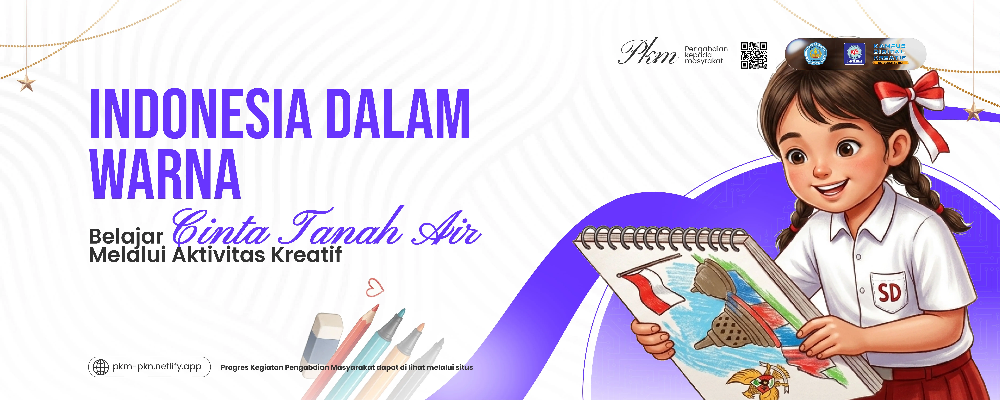
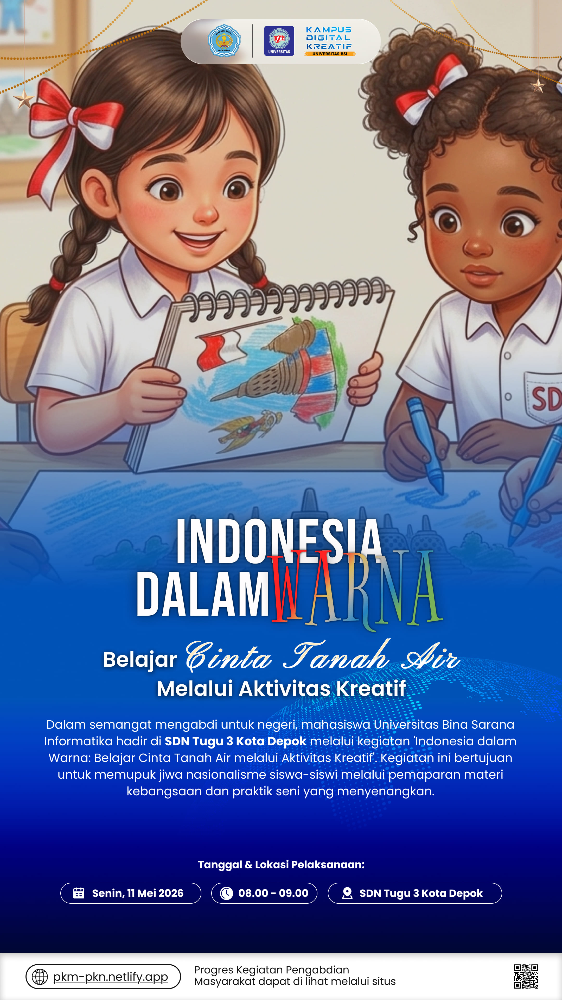

Edukasi Karakter Melalui Seni - Mengintip Persiapan Program 'Indonesia dalam Warna' untuk Generasi Muda
 diunggah oleh Tim Pelaksana PKM
(pada Mei, 2026)
diunggah oleh Tim Pelaksana PKM
(pada Mei, 2026)

Depok, 5 Mei 2026 - Sebuah inisiatif baru untuk menumbuhkan rasa cinta tanah air pada generasi muda segera hadir melalui program bertajuk "Indonesia dalam Warna: Belajar Cinta Tanah Air melalui Aktivitas Kreatif". Kegiatan ini dijadwalkan akan berlangsung pada 11 Mei 2026 dengan menyasar siswa-siswi sekolah dasar sebagai peserta utama. Berangkat dari keinginan untuk memperkenalkan nilai-nilai kebangsaan dengan cara yang tidak kaku, program ini akan menggabungkan sesi pemaparan materi yang interaktif dengan praktik langsung berupa aktivitas menggambar. Melalui metode ini, anak-anak diajak untuk tidak hanya mendengar, tetapi juga memvisualisasikan kebanggaan mereka terhadap Indonesia. Ketua Pelaksana, Muhamad Khadaffy, menjelaskan bahwa pemilihan aktivitas menggambar menjadi inti dari kegiatan ini. "Kami ingin memberikan ruang bagi anak-anak untuk mengekspresikan makna nasionalisme melalui perspektif mereka sendiri. Warna-warni yang mereka goreskan nantinya diharapkan menjadi simbol keberagaman dan rasa memiliki terhadap bangsa," ujarnya. Kegiatan ini akan dipandu oleh tim panitia yang terdiri dari enam orang mahasiswa dengan peran masing-masing: 1. Muhamad Khadaffy 2. Dhini Maheswari 3. Ratu Bulan Anggraini 4. Shifa Chamelia Azzahra 5. Salwa Aulia 6. Yolanda Diah

Program "Indonesia dalam Warna" diharapkan dapat menjadi pemantik semangat nasionalisme yang menyenangkan bagi para siswa, sekaligus membuktikan bahwa belajar tentang cinta tanah air bisa dilakukan melalui media apa saja, termasuk seni rupa.